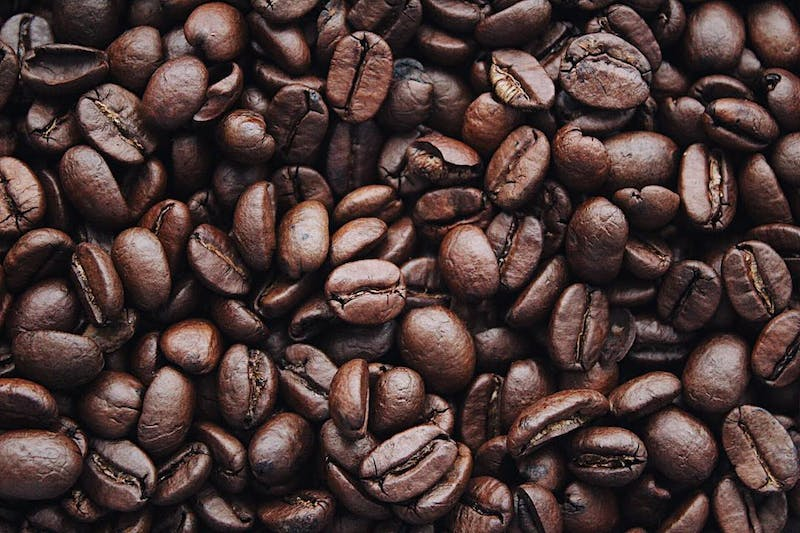

Tons of people drink coffee every single moring for most of their lives,but they have no idea how badly it is effecting their body. All the caffeine in coffee can slow down your nervous system. Most people drink two or three cups of coffee every morning. Thats about 285mg of caffine every single day. Coffee can also effect peoples mood.For example studies show people who drink coffee are more than likely to have a short temper. Next time you drink coffee think aboout how badly it is effecting your body.

There are about 129 differnt types of coffee.Some of your favorties may be the worse for your body.For example studies show that the frappuccino is the worst coffee for you. All the sugar and caffeine can slowly cause organ damage. Our bodies are not made to consume all that bad ingredients. Second worst coffee for you is French express. Drinking this coffee can lead to high cholesterol. Just because most coffees are bad for you doesnt mean they all are. Organic coffee is super healthy for you and has some health benefits. Organic coffee is full of nutrients. It is also great for your digestive system. Next time you go buy coffee try buying organic and see how benefical it is for you.
© 2024 Introduction to HTML